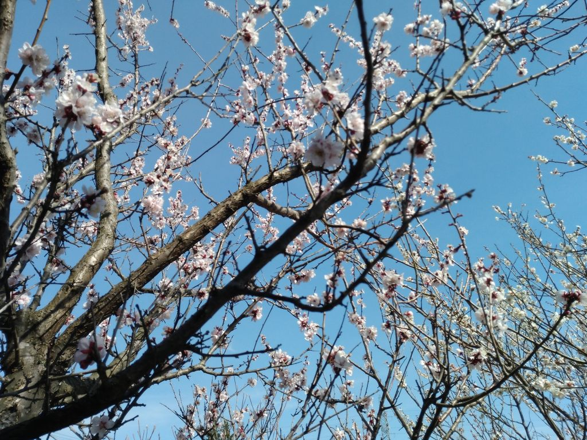
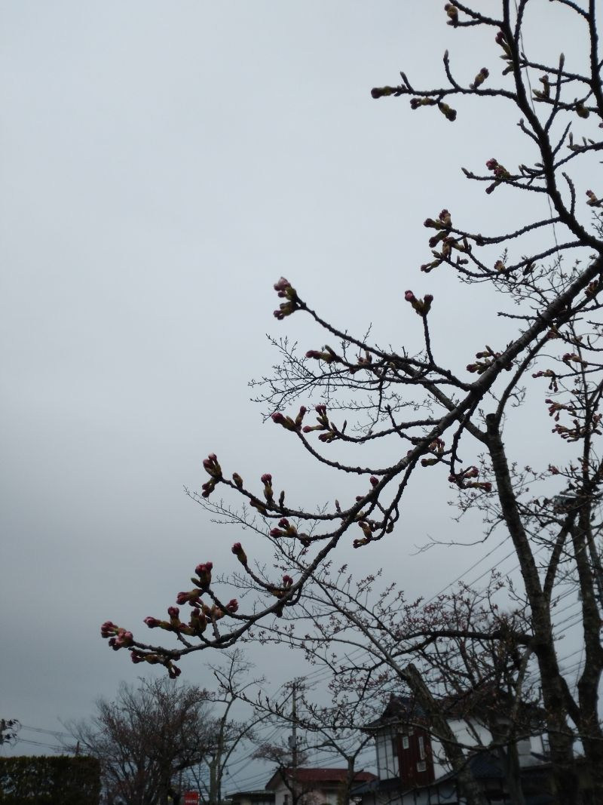
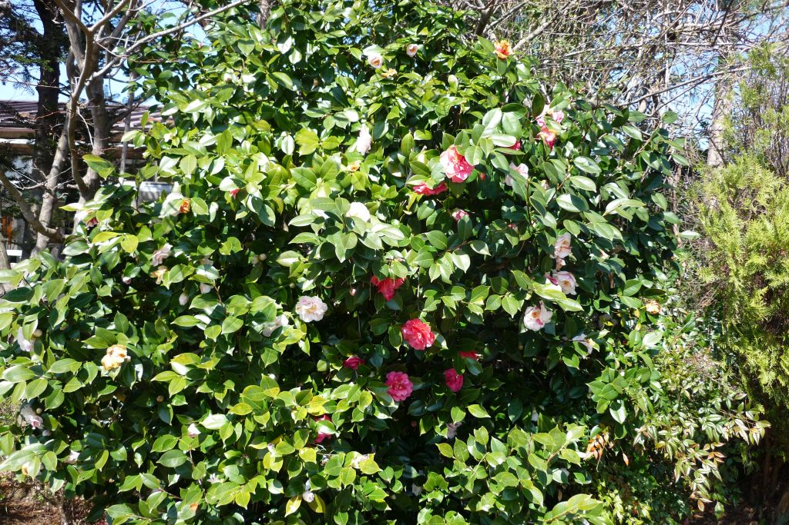
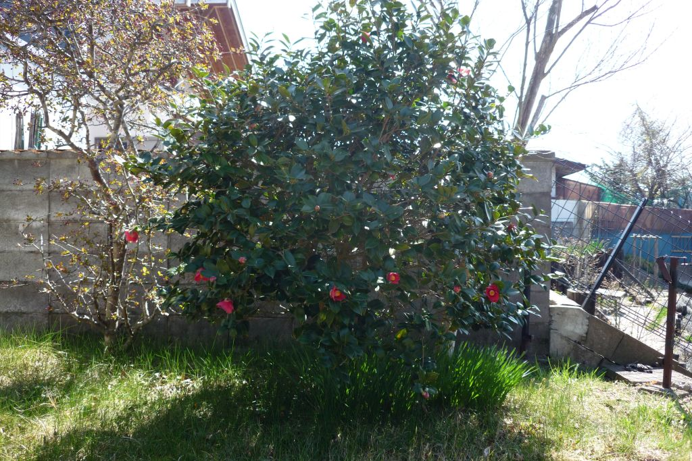
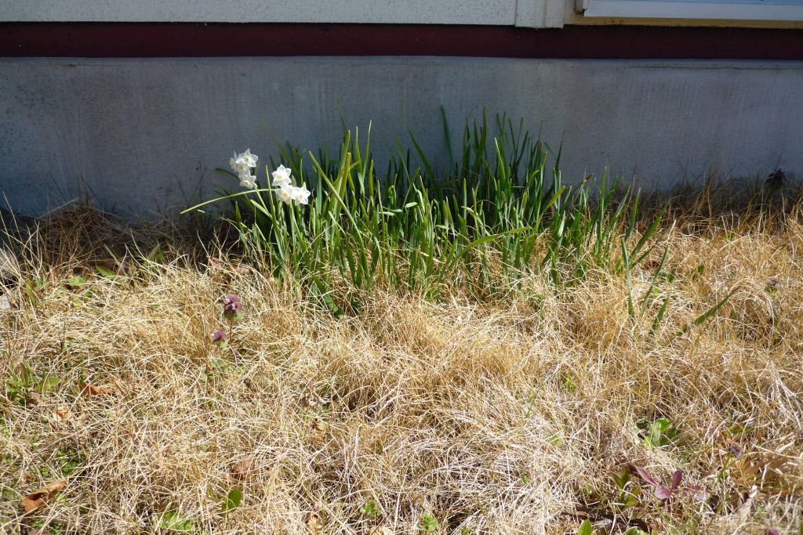
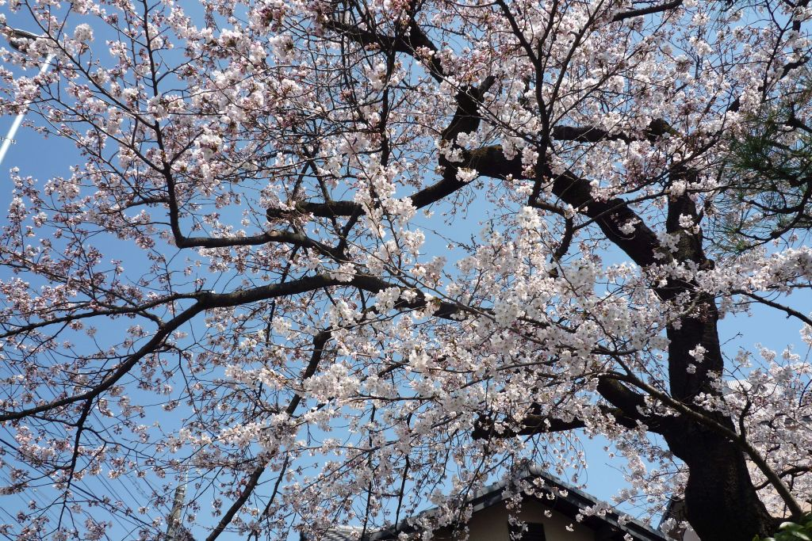
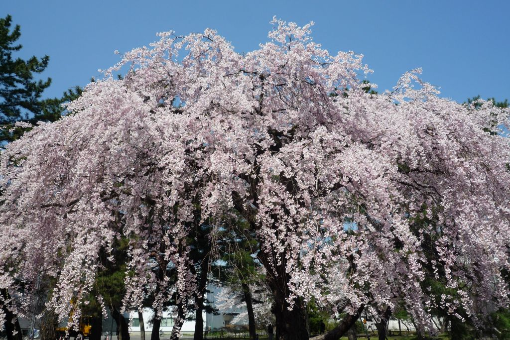
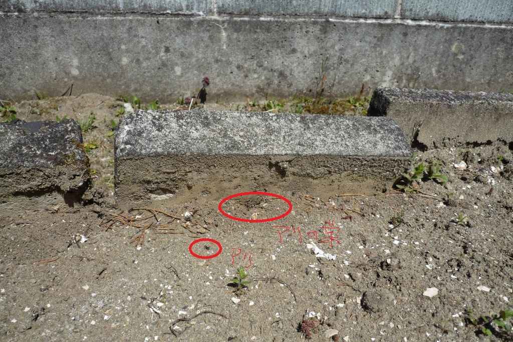
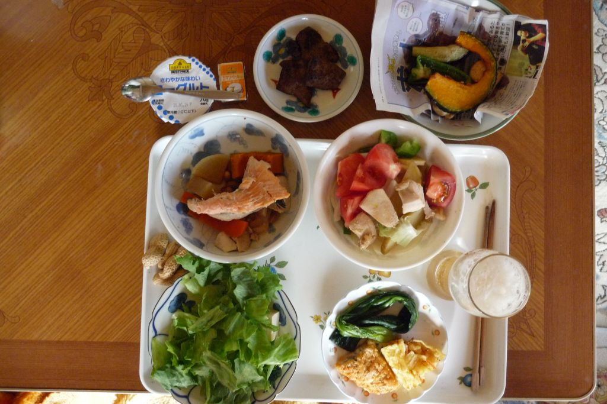

2020(R2)
2020/03/31 14:16 庭の梅
満開かな。

2020/04/01 13:27 桜のつぼみ
コロナなんかなんのその。

2020/04/01 9:59 椿
そろそろ終わり。

2020/04/01 9:59 椿の小さいの
この花の名前は？

2020/04/01 9:59 スイセン
毎年咲きます。今年はちょっと遅いかな。

2020/04/04 10:57 桜
子平町の桜。

2020/04/04 11:12 枝垂れ桜
大学病院構内。個人評価では仙台トップの枝垂れ桜。

2020/04/10 12:35 アリ
アリが活動開始。

2020/04/10 15:37 つまみ
ヨーグルト チーズ 素揚げ（鶏肉 ピーマン カボチャ） サラダ（鶏肉 山芋 トマト 豆腐 レタス 新玉 ジャガイモ）
ピーナッツ 牛レバ ほうれん草 アジフライ かき揚げ 鮭 煮物（人参 大根 カボチャ 大豆 マグロ）
